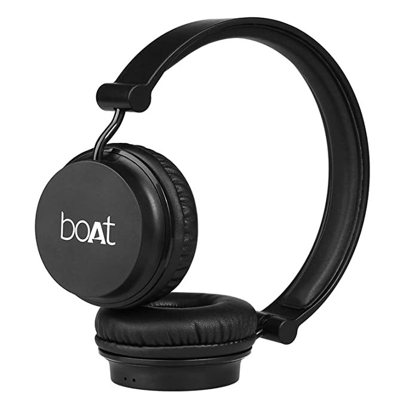
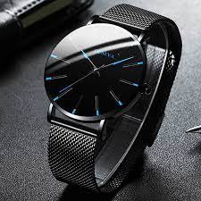

Case Study Between Google Lens And Mobile Net
Test image 1

Output on Google Lens
-Boat Rockerz 400 headphones
Output on Mobile Net
-Microphone
RESULT - Google lens is more accurate
Test image 2
Output on Google Lens
-Marbling Vacuum water bottle
Output on Mobile Net
-Vase
RESULT - Google lens is more accurate
Test image 3

Output on Google Lens
-Chocolate Cake
Output on Mobile Net
-Comic Book
RESULT - Google lens is more accurate
Test image 4

Output on Google Lens
-Bata Mesh shoes
Output on Mobile Net
-Running Shoes
RESULT - Google lens is more accurate
Test image 5

Output on Google Lens
-Mens luzury quartz
Output on Mobile Net
-Buckle
RESULT - Google lens is more accurate
I have tested 5 images and came to the comclusion that GOOGLE LENS is more accurate than MOBILE NET model